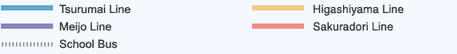

Contact
School of Psychology
Chukyo University
101-2 Yagoto Honmachi, Showa, Nagoya, Aichi 466-8666, Japan.
Phone: +81 52 835 7160 (Secretary)
Fax: +81 52 835 7144
From Nagoya Station to Chukyo University



101-2 Yagoto Honmachi, Showa, Nagoya, Aichi 466-8666, Japan.
Phone: +81 52 835 7160 (Secretary)
Fax: +81 52 835 7144